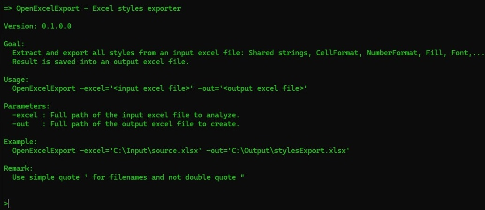

OpenExcelExport is useful application to extract main data from an excel: Shared strings, Styles/CellFormats, Fills, Borders and Fonts. This application is free of charge.
The application export all these data in an output excel file. Each extracted data are displayed in a tabpage.
Open a Terminal and execute the application.
After executing the application without any parameter, a short help will be displayed:
You want to analyse the content of an Excel file, execute the application and provide tow expected parameters:
1- The excel file to analyse,
2- the Excel output file.
The output Excel file contains the result of the analysis of the input excel file.
There are 7 tabpages.
The application can be downloaded here Just unzip the archive and execute the file OpenExcelExport.exe
This application is a console application developed in C# which uses the library OpenExcelSdk
The library OpenExcelSdk can be downloaded here